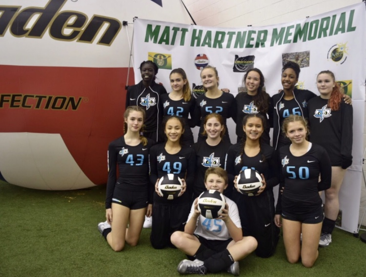

1 / 3

These are my teammates ;)
2 / 3

This is me serving, woohoo!
3 / 3

Kraken Volleyball Club
Explore the inside scoop of my life.
Once upon a time, I tried digging a ball but it somehow hit my head. My teammates said my eyes rolled back and I blacked out for a split second. From my point of view, I remember falling and waking up; balling my eyes out. But hey, we love a volleyball queen!
Clubs: Puget Sound Volleyball Club ('16 -'17) & Kraken Volleyball Club ('17 - '19)
My freshman year, I literally never touched a tennis racket before the season started. But because of my fundamentals in volleyball, I was able to incorporate my skills and made JV my first year. Woohoo!
Accomplishments: Rookie of the Year, Most Improved, Youngest Captain